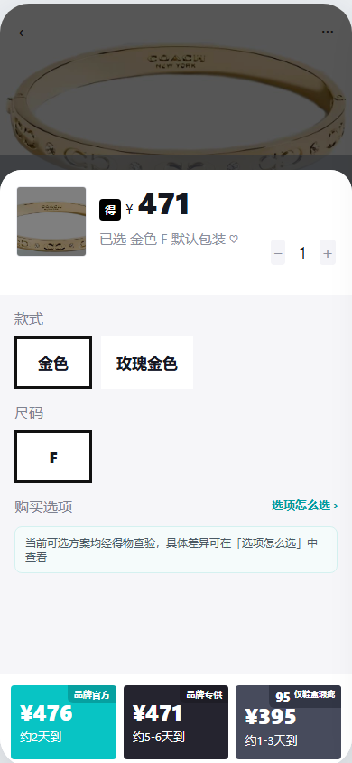
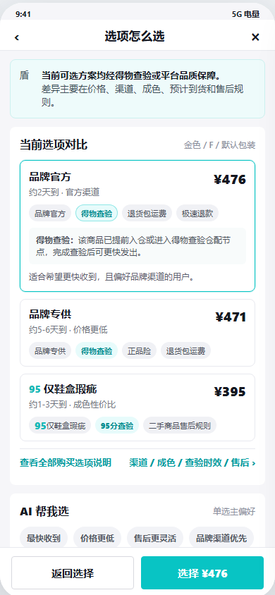
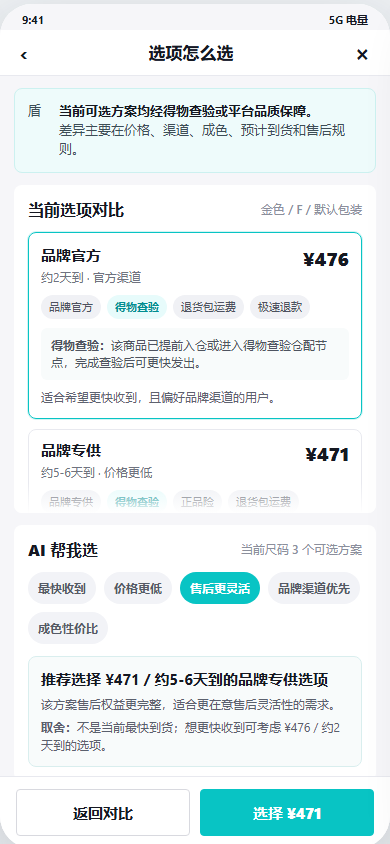
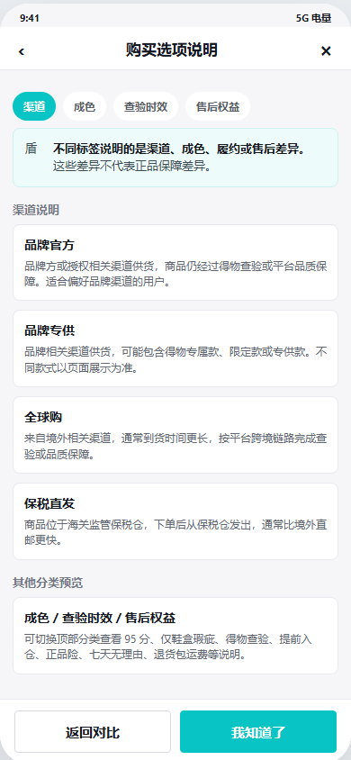

用户看见多个购买选项，却不知道差在哪。
同一个商品可能同时出现品牌官方、品牌专供、保税直发、全球购和 95 分等选项。页面展示了价格与部分标签，却没有把渠道、成色、时效和售后差异放在一起说明。
用户真正想知道的是：“多花的钱买到了什么？便宜的选项又少了什么？”
同一个商品为什么会有不同价格、不同到货时间？我围绕得物“尺码 + 购买选项”页面， 设计了「选项怎么选」辅助入口，把渠道、成色、时效和售后差异讲清楚。

同一个商品可能同时出现品牌官方、品牌专供、保税直发、全球购和 95 分等选项。页面展示了价格与部分标签，却没有把渠道、成色、时效和售后差异放在一起说明。
到货更快不代表没有查验，价格更低也不等于保障更差。用户需要在下单前看到渠道、成色、查验和售后差异，而不是自己猜。
渠道、成色、查验时效和售后规则集中放进说明页。用户可以从对比页继续查看，也可以随时返回原来的选择过程。
先说明共同保障，再比较当前所有购买选项；用户可以点开标签看说明，也可以选择自己最关心的条件，让页面帮忙推荐。
体验完整原型 ↘先说明当前可选方案都经过得物查验，并享有平台品质保障，避免用户把价格差异误解成真假差异。
把价格、预计到货、渠道、成色和售后权益放到同一视线里，减少来回切换和记忆。
品牌官方、得物查验、95 分等标签都可以直接点开，页面不需要堆成长篇说明。
用户选择“最快收到”“预算最低”或“跨境但不想久等”等条件，页面给出更合适的选项和相应取舍。
点击手机中的入口、选项、标签和关注点，完整体验「选项怎么选」如何接入原有购买流程。
七个关注点都可以点击。每次选择后，右侧都会同步更新推荐方案、推荐理由和需要接受的取舍。
这是当前预计到货最快的选项，也保留品牌渠道和页面展示的售后权益。
价格、到货时间和售后权益确实不同，但用户更需要先确认：无论选择哪一种，都经过得物查验，并享有平台品质保障。确认这个共同前提后，用户才能更放心地比较具体差异。
先回答“是不是都可靠”，再回答“哪一个更适合我”。这是整套方案最重要的产品判断。
渠道、成色与履约组合
库存位置与履约方式
商品来源与状态说明
退换条件与处理时间
先消除对真假与品质保障的担心。
再看价格、时效、渠道与售后。
最后帮助选择，但不替用户决定。
共同保障是比较的前提，具体差异才是选择的依据。
验证重点不是有多少人点过“帮我选”，而是理解成本是否下降、选择是否更顺利，以及后续误解是否减少。
完成对比后，是否继续进入确认订单。
同时观察反复切换选项的次数。
判断哪些概念最需要平台解释。
关注查验、时效和售后问题的变化。
以上为功能上线后的验证方案，本项目暂无线上业务数据。
本板块完整呈现项目背景、核心问题、用户链路、功能设计、指标方案与风险判断。
四张原始终版画面分别呈现，完整点击与滚动逻辑可在上方 Demo 中体验。


